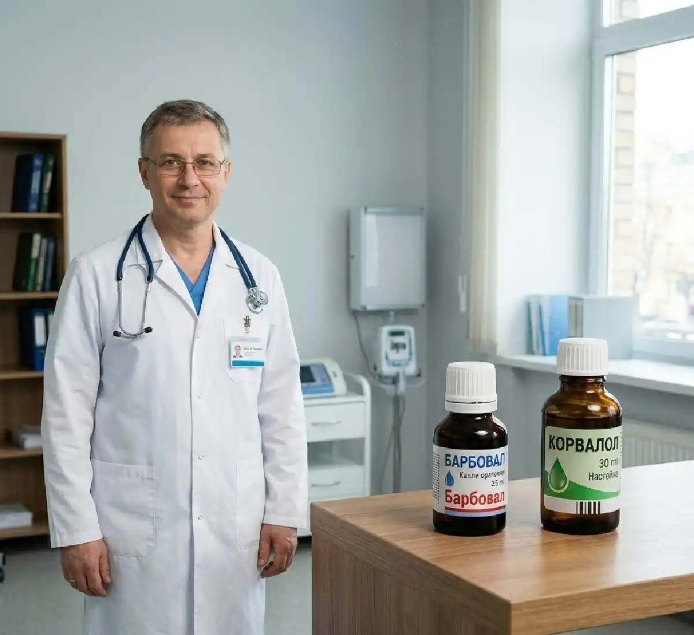

+38(068) 79 72 782
+38(068) 79 72 782Барбовал и Корвалол почему эти капли так опасны
От капли спокойствия до океана зависимости — один шаг


Бесплатная консультация, работаем круглосуточно 24/7
От капли спокойствия до океана зависимости — один шаг

Барбовал и Корвалол на протяжении многих лет воспринимаются как привычные и «безобидные» средства для снятия стресса, тревоги и нормализации сна. Эти препараты широко применяются в странах постсоветского пространства и нередко присутствуют практически в каждой домашней аптечке. Их принимают при ощущении сердцебиения, нервном напряжении, трудностях с засыпанием или просто для того, чтобы успокоиться после эмоциональной нагрузки.
Однако за внешней безопасностью этих седативных капель скрывается серьёзная медицинская проблема. В состав Барбовала и Корвалола входит фенобарбитал — вещество из группы барбитуратов, которое оказывает выраженное влияние на центральную нервную систему и способно вызывать лекарственную зависимость. При регулярном и длительном употреблении такие препараты могут приводить к формированию устойчивой физической и психологической зависимости, а также к нарушениям работы нервной системы.
В современной наркологии зависимость от фенобарбитала рассматривается как одна из форм лекарственной зависимости. Это состояние требует внимательной диагностики и комплексного лечения. Понимание механизмов формирования зависимости помогает вовремя распознать проблему, снизить риск осложнений и обратиться за профессиональной медицинской помощью.
Одной из причин распространённости Барбовала и Корвалола является их репутация «лёгких успокоительных». Многие люди воспринимают эти препараты как обычные капли, которые помогают снять стресс, нормализовать сон или облегчить неприятные ощущения в области сердца. Их часто принимают при волнении, повышенной тревожности, эмоциональном напряжении или после тяжёлого дня, когда хочется быстрее расслабиться и восстановить внутреннее спокойствие.
Такая репутация сформировалась исторически. Эти препараты используются десятилетиями, часто продаются без строгого контроля и активно применяются людьми старшего возраста. Для многих они стали привычным средством «на всякий случай» — при бессоннице, сердцебиении или нервном напряжении. Кроме того, эффект расслабления после приёма капель наступает достаточно быстро, что создаёт ощущение их эффективности и безопасности. Человек чувствует успокоение, снижается тревожность, появляется сонливость — и это укрепляет уверенность в том, что препарат действительно помогает. Дополнительную роль играет и форма препарата. Капли нередко воспринимаются как менее серьёзное средство по сравнению с таблетками или другими сильнодействующими лекарствами. Сам формат «несколько капель на воду» психологически создаёт ощущение мягкого и безопасного воздействия. Многие люди считают, что если препарат продаётся без рецепта и используется в небольших дозах, то он не может нанести вреда организму.
Однако фармакологический эффект определяется не формой выпуска препарата, а его составом и действующим веществом. В случае Барбовала и Корвалола ключевую роль играет фенобарбитал — вещество из группы барбитуратов, которое оказывает выраженное влияние на центральную нервную систему. Несмотря на то, что его концентрация в каплях относительно небольшая, при регулярном и длительном приёме вещество может накапливаться в организме и постепенно изменять работу нервной системы.
Со временем человек может начать принимать препарат всё чаще. Сначала это происходит в стрессовых ситуациях или при бессоннице, затем приём становится регулярным — например, каждый вечер перед сном. Постепенно формируется привычка использовать капли как основной способ справляться с тревогой, напряжением или эмоциональной перегрузкой. В результате организм привыкает к действию препарата, а естественные механизмы регуляции сна и эмоционального состояния начинают работать хуже. Именно поэтому длительное и бесконтрольное употребление седативных капель может привести к формированию лекарственной зависимости и негативно влиять на работу нервной системы. Человек может начать ощущать, что без привычной дозы препарата ему становится труднее расслабиться, уснуть или справиться со стрессом. В таких случаях приём капель постепенно перестаёт быть эпизодическим и превращается в регулярную необходимость.
Фенобарбитал — это лекарственное вещество из группы барбитуратов, которое оказывает выраженное седативное, противосудорожное и снотворное действие. Он воздействует на центральную нервную систему, усиливая тормозные процессы в головном мозге. Именно благодаря этому эффекту препараты, содержащие фенобарбитал, могут снижать уровень тревожности, вызывать чувство расслабления и способствовать засыпанию.
Основной механизм действия фенобарбитала связан с влиянием на рецепторы гамма-аминомасляной кислоты (ГАМК) — главного тормозного медиатора мозга. Под действием препарата повышается активность ГАМК-ергической системы, что приводит к снижению возбуждения нейронов в центральной нервной системе. В результате уменьшается нервное напряжение, замедляется активность головного мозга, появляется сонливость и ощущение внутреннего спокойствия.
Именно этот эффект многие люди воспринимают как «успокаивающее действие» капель. После приёма препарата снижается уровень тревоги, нормализуется эмоциональное состояние, становится легче уснуть. Однако такое воздействие связано с прямым влиянием на работу нейромедиаторных систем мозга, а не только с лёгким седативным эффектом. При регулярном употреблении фенобарбитал начинает изменять работу нервной системы. Мозг постепенно адаптируется к присутствию вещества и начинает воспринимать его как часть привычного химического баланса. В ответ на постоянное воздействие препарата снижается чувствительность рецепторов и уменьшается естественная выработка некоторых нейромедиаторов.
Постепенно формируется толерантность — состояние, при котором прежняя доза препарата уже не вызывает ожидаемого эффекта. Человек может замечать, что для достижения привычного успокоения или улучшения сна требуется всё большее количество капель. В результате происходит постепенное увеличение дозировки или частоты приёма препарата. Именно этот механизм и лежит в основе формирования лекарственной зависимости. Организм привыкает к постоянному присутствию фенобарбитала, а при отсутствии препарата могут появляться неприятные симптомы: тревожность, раздражительность, бессонница или внутреннее напряжение. Со временем препарат перестаёт восприниматься как временное средство, а начинает использоваться регулярно, что повышает риск развития устойчивой зависимости.
Зависимость от фенобарбитала развивается постепенно и часто остаётся незаметной на ранних этапах. На начальном этапе человек принимает капли эпизодически — например, в периоды стресса, эмоционального напряжения или при нарушениях сна. Многие используют Барбовал или Корвалол как «быстрое средство» для успокоения: несколько капель помогают расслабиться, снять тревогу и легче уснуть.
Со временем приём может становиться более регулярным. Человек начинает принимать препарат не только в стрессовых ситуациях, но и при малейшем дискомфорте — например, перед сном, при усталости или после эмоциональной нагрузки. Постепенно формируется привычка использовать седативные капли как основной способ справляться с тревогой и напряжением. Постепенно организм привыкает к действию препарата. Эффект расслабления становится менее выраженным, и человек может заметить, что прежняя доза уже не даёт ожидаемого результата. Чтобы добиться привычного эффекта, возникает желание увеличить количество капель или принимать препарат чаще. В этот момент начинает формироваться фармакологическая толерантность — состояние, при котором чувствительность организма к действующему веществу снижается.
На фоне толерантности приём препарата может становиться всё более частым. Некоторые люди начинают использовать капли ежедневно, иногда несколько раз в день. Постепенно фенобарбитал начинает восприниматься организмом как часть привычного биохимического баланса нервной системы. При длительном употреблении развивается физическая зависимость. Организм начинает воспринимать фенобарбитал как необходимое вещество для поддержания нормального функционирования нервной системы. Нервные клетки адаптируются к постоянному присутствию препарата, и при его отсутствии могут возникать нарушения работы центральной нервной системы.
Если препарат резко отменяется, могут появляться симптомы отмены — тревожность, бессонница, раздражительность, внутреннее напряжение и ухудшение самочувствия. У некоторых людей отмечаются повышенная чувствительность к стрессу, учащённое сердцебиение, тремор или выраженные нарушения сна. Именно эти проявления абстиненции часто заставляют человека снова принимать препарат, что поддерживает и усиливает зависимость.
Злоупотребление Барбовалом и Корвалолом может долго оставаться незаметным как для самого человека, так и для его близких. Поскольку эти препараты воспринимаются как привычные седативные капли, их регулярный приём часто не вызывает настороженности. Однако при длительном использовании постепенно могут появляться характерные признаки, указывающие на формирование лекарственной зависимости. На ранних этапах человек может не замечать изменений в своём поведении. Приём препарата объясняется стрессом, усталостью или проблемами со сном. Со временем употребление становится всё более регулярным, а необходимость в препарате начинает восприниматься как обычная часть повседневной жизни. К возможным симптомам злоупотребления относятся:
Также могут появляться изменения в поведении и эмоциональном состоянии. Человек может становиться более вялым, менее активным, хуже справляться с повседневными задачами. Иногда наблюдаются перепады настроения, повышенная утомляемость и трудности с концентрацией внимания.
В некоторых случаях формируется психологическая зависимость от препарата. Человек начинает носить капли с собой и испытывает выраженный дискомфорт, если их нет под рукой. Возникает ощущение, что без привычной дозы становится труднее расслабиться, справиться со стрессом или нормально уснуть. Подобные признаки могут свидетельствовать о формировании лекарственной зависимости. При появлении таких симптомов важно своевременно обратить внимание на проблему и при необходимости обратиться за медицинской консультацией, чтобы предотвратить дальнейшее развитие зависимости и возможные осложнения.
Длительное употребление препаратов, содержащих фенобарбитал, может оказывать негативное влияние на различные системы организма. В первую очередь страдает центральная нервная система, поскольку именно на неё направлено основное фармакологическое действие барбитуратов. При регулярном приёме седативных капель происходит постоянное подавление активности нейронов, что постепенно изменяет работу головного мозга и может приводить к ухудшению когнитивных функций. При хроническом приёме седативных препаратов могут наблюдаться следующие изменения:
Со временем такие изменения могут становиться более выраженными. Человеку становится труднее сосредоточиться на работе или учёбе, снижается скорость реакции и способность быстро принимать решения. Нередко появляются повышенная утомляемость, апатия и снижение интереса к привычной деятельности. Особенно чувствительна к действию фенобарбитала нервная система. При длительном применении может нарушаться баланс нейромедиаторов, что приводит к изменению эмоционального состояния. У некоторых людей появляются перепады настроения, повышенная раздражительность или, наоборот, выраженная вялость и подавленность.
Кроме того, фенобарбитал влияет на работу печени, так как именно этот орган участвует в метаболизме препарата. Печень активно участвует в переработке и выведении действующего вещества, поэтому при длительном употреблении седативных капель на неё ложится дополнительная нагрузка. Со временем это может приводить к нарушению ферментных систем печени и ухудшению процессов детоксикации. Также увеличивается нагрузка на другие органы, участвующие в выведении продуктов обмена. При хроническом употреблении препаратов организм вынужден постоянно перерабатывать и выводить активные вещества, что может постепенно снижать его адаптационные возможности. Именно поэтому длительный и бесконтрольный приём препаратов, содержащих фенобарбитал, рассматривается медициной как потенциально опасный и требует внимательного отношения со стороны пациента и врача.
Фенобарбитал оказывает выраженное влияние на работу головного мозга. Он подавляет активность нервных клеток, снижая уровень возбуждения в центральной нервной системе. Такое действие связано с усилением тормозных процессов в нейронах, благодаря чему уменьшается нервное напряжение, снижается уровень тревоги и появляется ощущение расслабления.
При кратковременном применении это проявляется в виде седативного эффекта — уменьшается тревожность, появляется чувство спокойствия, расслабления и сонливости. Именно этот эффект часто становится причиной того, что люди начинают регулярно использовать препараты, содержащие фенобарбитал, для облегчения засыпания или снятия эмоционального напряжения. Однако при длительном применении происходят более глубокие изменения в работе нервной системы. Постоянное воздействие препарата постепенно изменяет функционирование нейромедиаторных систем головного мозга. Нервные клетки начинают адаптироваться к присутствию вещества, а естественные механизмы регуляции возбуждения и торможения могут работать менее эффективно.
Постепенно может нарушаться баланс возбуждающих и тормозных процессов в центральной нервной системе. Это приводит к ухудшению когнитивных функций, снижению скорости мышления и проблемам с памятью. Человеку становится труднее концентрироваться, усваивать новую информацию и поддерживать длительное внимание.
У некоторых людей на фоне длительного употребления фенобарбитала могут возникать эмоциональные нарушения. Возможны повышенная раздражительность, перепады настроения, снижение эмоциональной устойчивости и эпизоды депрессивных состояний. Иногда наблюдаются апатия, снижение мотивации и ухудшение общего психоэмоционального состояния. При продолжительном воздействии препарата такие изменения могут усиливаться, затрагивая не только когнитивную сферу, но и общее качество жизни человека. Именно поэтому длительное и бесконтрольное употребление препаратов, содержащих фенобарбитал, требует внимательного отношения и при необходимости консультации врача.
При сформированной зависимости резкая отмена фенобарбитала может вызывать абстинентный синдром. Это состояние развивается из-за того, что организм уже адаптировался к постоянному присутствию вещества. Нервная система начинает функционировать с учётом действия препарата, и при его внезапном прекращении возникает выраженный дисбаланс нейромедиаторных процессов.
В норме фенобарбитал усиливает тормозные механизмы в центральной нервной системе. Когда препарат длительное время поступает в организм, мозг постепенно снижает собственную активность тормозных систем. Поэтому при резкой отмене возникает противоположная реакция — чрезмерное возбуждение нервной системы, что и проявляется симптомами абстиненции. К основным симптомам абстинентного синдрома относятся:
Кроме этих проявлений могут наблюдаться потливость, головная боль, ощущение сильного беспокойства, трудности с концентрацией внимания и выраженное ухудшение общего самочувствия. В некоторых случаях у человека возникают панические реакции, сильная нервная возбудимость или чувство внутреннего дискомфорта, которое трудно контролировать.
В тяжёлых случаях абстинентный синдром может сопровождаться судорожными приступами, выраженными нарушениями сна и серьёзными расстройствами нервной системы. Именно поэтому при наличии зависимости отмена препарата должна проводиться постепенно и под медицинским контролем. Врач оценивает состояние пациента, подбирает безопасную схему снижения дозировки и при необходимости назначает поддерживающую терапию, которая помогает снизить выраженность симптомов отмены и стабилизировать работу нервной системы.
Лечение лекарственной зависимости требует комплексного подхода и профессионального медицинского наблюдения. Самостоятельные попытки резко отказаться от препаратов, содержащих фенобарбитал, могут быть опасными, особенно если зависимость сформировалась после длительного употребления. Именно поэтому терапия обычно начинается с медицинской оценки состояния пациента и разработки индивидуального плана лечения.
На первом этапе врач оценивает длительность приёма препарата, используемые дозировки, общее состояние здоровья пациента и возможные осложнения со стороны нервной системы, сердца и внутренних органов. Также учитываются психологические факторы — уровень тревожности, нарушения сна и эмоциональное состояние человека. В зависимости от степени зависимости могут применяться различные методы лечения:
Детоксикация помогает снизить уровень действующего вещества в организме и облегчить симптомы отмены. Постепенная отмена препарата проводится под контролем врача, чтобы минимизировать риск абстинентного синдрома и снизить нагрузку на нервную систему. При необходимости назначаются лекарственные средства, которые помогают стабилизировать эмоциональное состояние, улучшить сон и поддержать работу нервной системы. Важной частью лечения является стабилизация работы центральной нервной системы. После длительного воздействия фенобарбитала нервные клетки нуждаются во времени для восстановления нормального функционирования. В этот период особое внимание уделяется нормализации сна, снижению тревожности и постепенному восстановлению когнитивных функций.
Во многих странах Европы препараты, содержащие фенобарбитал, строго регулируются или полностью запрещены для свободной продажи. Такое ограничение связано с высоким риском формирования зависимости, а также с потенциально серьёзными побочными эффектами, которые могут возникать при длительном или бесконтрольном употреблении.
Фенобарбитал относится к группе барбитуратов — веществ, оказывающих сильное воздействие на центральную нервную систему. Эти препараты обладают узким терапевтическим диапазоном, что означает, что разница между терапевтической и токсической дозой может быть относительно небольшой. При превышении безопасной дозировки возрастает риск серьёзных осложнений, включая угнетение дыхательного центра и передозировку.
Кроме того, барбитураты способны вызывать выраженную физическую и психологическую зависимость. При длительном применении развивается толерантность, что заставляет человека увеличивать дозировку для достижения прежнего эффекта. В случае резкой отмены препарата могут возникать тяжёлые симптомы абстиненции, включая судороги и выраженные нарушения работы нервной системы. По этой причине современная медицина постепенно отказывается от широкого применения барбитуратов. В большинстве случаев они заменяются более современными и безопасными препаратами, которые оказывают седативное действие, но имеют значительно меньший риск формирования зависимости и передозировки.
Обратиться за консультацией к врачу рекомендуется в тех случаях, когда приём седативных капель становится регулярным и человек начинает постепенно увеличивать дозировку. Такие изменения могут свидетельствовать о формировании лекарственной зависимости, поэтому важно вовремя обратить внимание на проблему и получить профессиональную медицинскую помощь. Также поводом для обращения к специалисту могут быть:
Ранняя консультация врача помогает предотвратить развитие тяжёлой лекарственной зависимости и снизить риск осложнений со стороны нервной системы. Специалист сможет оценить состояние пациента, определить степень зависимости и подобрать безопасную тактику лечения. Наркологическая помощь может включать детоксикацию организма, постепенную отмену препарата, медикаментозную поддержку и восстановление работы нервной системы. Чем раньше начинается лечение, тем выше вероятность полного восстановления и возвращения к нормальной жизни без лекарственной зависимости.
Получить консультацию врача-нарколога и необходимую медицинскую помощь можно в наркологической службе UmbrellaPlus. Специалисты клиники оказывают помощь пациентам с лекарственной зависимостью и проводят лечение в нескольких городах Украины, включая (Киев | Харьков | Одесса | Днепр | Львов | Запорожье | Черкассы). Обращение к специалистам позволяет своевременно начать лечение и получить профессиональную поддержку на всех этапах восстановления.
Профилактика лекарственной зависимости включает ответственное и осознанное отношение к приёму медикаментов. Даже относительно распространённые седативные средства должны использоваться строго по инструкции и при необходимости — по рекомендации врача. Самостоятельное и длительное применение препаратов, особенно тех, которые воздействуют на центральную нервную систему, может постепенно приводить к формированию привыкания.
Многие люди начинают использовать седативные препараты для быстрого снятия стресса, тревоги или для облегчения засыпания. Однако регулярное применение таких средств без медицинского контроля может нарушать естественные механизмы регуляции сна и эмоционального состояния. Со временем организм начинает адаптироваться к действию препарата, и человек может ощущать, что без него становится труднее расслабиться или уснуть. Основные меры профилактики лекарственной зависимости включают:
Важно понимать, что проблемы со сном, хроническая тревожность и эмоциональное напряжение требуют комплексного подхода. В таких случаях может быть полезна консультация врача, который поможет определить причину состояния и подобрать безопасные методы лечения или поддержки. Ответственное отношение к приёму лекарственных средств значительно снижает риск развития зависимости и помогает сохранить здоровье нервной системы.
Психологическая поддержка играет важную роль в лечении лекарственной зависимости. Работа с психологом помогает человеку лучше понять причины формирования зависимости, выявить факторы стресса и научиться справляться с эмоциональным напряжением без применения седативных препаратов. Во многих случаях злоупотребление успокоительными средствами становится своеобразным способом избегания тревоги, усталости или психологического дискомфорта, поэтому работа с эмоциональной сферой является важной частью восстановления.
Психотерапия направлена на формирование новых моделей поведения, развитие навыков эмоциональной регуляции и восстановление психологического равновесия. В процессе терапии человек учится распознавать ситуации, которые провоцируют желание принять препарат, и постепенно осваивает более здоровые способы справляться со стрессом, тревожностью и нарушениями сна. Это может включать техники расслабления, методы управления стрессом и формирование устойчивых привычек, поддерживающих психоэмоциональное здоровье.
Также важным элементом терапии является поддержка со стороны близких и специалистов. Понимание и участие семьи могут существенно облегчить процесс восстановления, снизить уровень тревожности и укрепить мотивацию к лечению. В некоторых случаях применяются групповые формы психологической помощи, которые позволяют человеку почувствовать поддержку со стороны людей, сталкивающихся с похожими трудностями.
Комплексное лечение, включающее медицинскую помощь и психологическую поддержку, значительно повышает шансы на восстановление и возвращение к полноценной жизни без лекарственной зависимости. Такой подход помогает не только отказаться от препарата, но и сформировать устойчивые навыки управления стрессом, что снижает риск повторного развития зависимости в будущем.
Телефон для консультации и вызова доктора: +38(050-021-69-57)

Да, мы строго соблюдаем полную конфиденциальность на всех этапах лечения. Информация о пациенте, диагнозе и прохождении терапии не передаётся третьим лицам. Обращение к нам не влечёт постановку на учёт. Вы можете быть уверены в безопасности и анонимности.
Программа лечения разрабатывается индивидуально после консультации со специалистом. Учитываются вид зависимости, её длительность, физическое и психологическое состояние пациента. Такой подход позволяет повысить эффективность терапии и снизить риск срыва. Мы не используем шаблонные решения.
Да, мы сопровождаем пациентов и после основного курса лечения. Проводятся консультации, рекомендации по адаптации и профилактике рецидивов. При необходимости возможна дальнейшая психологическая поддержка. Это помогает сохранить результат и вернуться к полноценной жизни.
Номер телефона:
+380 (68) 797 27 82
+380 (50) 021 69 57
Адрес наркологического центра вашего города уточняйте по
телефону
Работаем в: Киеве, Одессе, Львове, Харькове, Днепре,
Запорожье, Черкассах, Чугуеве, Черноморске, Каменском
Telegram: t.me/umbrellaplus
График работы: Круглосуточно